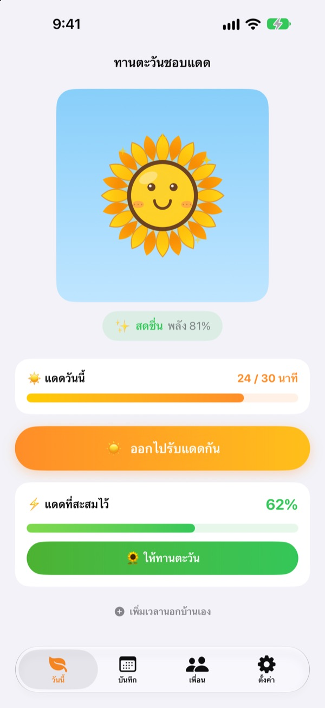
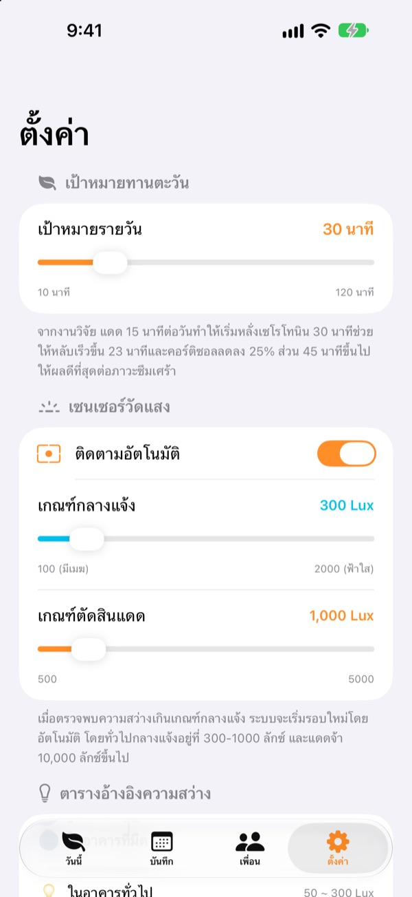
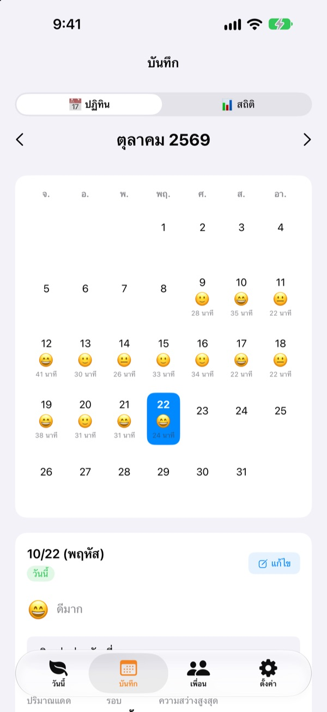
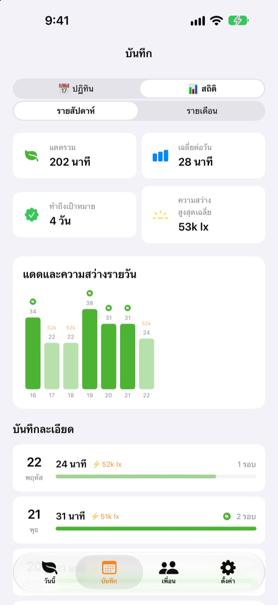

เอาแดดวันนี้
ไปเลี้ยงทานตะวัน
แค่ออกไปข้างนอก เวลารับแดดก็สะสมเอง ให้แดดที่สะสมไว้กับทานตะวันแล้วมันจะสดชื่น ถ้าลืมไปหลายวัน มันจะเริ่มเหี่ยว
ใช้ได้ทุกฟีเจอร์ฟรี บันทึกเก็บไว้ในเครื่องเท่านั้น

ลองสะสมแดดดู
เลือกความสว่างกับเวลา รับแดด แล้วเอาไปให้ทานตะวันที่กำลังจะเหี่ยว
วันนี้คุณโดนแดดไปกี่นาที
เดินไม่กี่ก้าวตอนไปทำงาน ออกไปซื้อข้าวเที่ยงแป๊บเดียว ถ้าอยู่ในอาคารทั้งวัน กว่าจะรู้ตัวว่าแทบไม่ได้เจอแดดเลยก็ตอนเย็นแล้ว ทานตะวันชอบแดดบอกเวลาที่คุณอยู่กลางแจ้งเป็นตัวเลข และทานตะวันก็รอให้คุณออกไปเดินพรุ่งนี้
ออกไปข้างนอก แล้วแอปวัดให้เอง
แตะ ออกไปรับแดดกัน แล้วออกไปข้างนอก แอปจะประเมินความสว่างรอบตัวจากข้อมูลการรับแสงของกล้องหน้า เมื่อแสงสว่างระดับกลางแจ้งต่อเนื่องราว 30 วินาที ก็จะเริ่มบันทึก แอปไม่ถ่ายและไม่เก็บรูปใด ๆ
หลังจากนั้นเซ็นเซอร์จะเปิดแค่ 20 วินาทีทุก 2 นาทีเพื่อประหยัดแบตเตอรี่

จดแดดและอารมณ์ทุกวัน
ในปฏิทิน แต่ละวันจะมีเวลารับแดด อีโมจิอารมณ์ และโน้ตสั้น ๆ ถ้าอยู่ข้างนอกแต่ไม่ได้วัด ใช้ เพิ่มเวลานอกบ้านเอง เพิ่มได้ตั้งแต่ 5 ถึง 120 นาที

เห็นภาพรวมทั้งสัปดาห์และทั้งเดือน
สถิติรายสัปดาห์และรายเดือนบอกว่าวันไหนทำถึงเป้าและได้แดดเฉลี่ยเท่าไร ตั้งเป้าหมายรายวันได้ 10 ถึง 120 นาที และดูได้ทันทีที่หน้าแรกว่าวันนี้ยังขาดอีกกี่นาที
วิดเจ็ตบนหน้าจอโฮมและหน้าจอล็อก รวมถึง Dynamic Island ก็แสดงแดดของวันนี้และสภาพทานตะวัน

เริ่มได้ใน 3 ขั้นตอน
- 1
ตั้งเป้าหมายรายวัน
เริ่มต้นที่ 30 นาที เปลี่ยนได้ตั้งแต่ 10 ถึง 120 นาทีในการตั้งค่า
- 2
ออกไปรับแดด
แตะ
ออกไปรับแดดกันแล้วเปิดแอปไว้ขณะออกไปข้างนอก แอปจะขอสิทธิ์ใช้กล้องแค่ครั้งแรก - 3
ให้ทานตะวัน
แตะ
ให้ทานตะวันเพื่อเปลี่ยนแดดที่สะสมไว้เป็นพลังงาน
แสงกลายเป็นแดดที่สะสมได้อย่างไร
- ต่ำกว่า 300 ลักซ์
- แสงอ่อน: ไม่นับเป็นเวลารับแดด
- 300–1,000 ลักซ์
- กลางแจ้ง/มีเมฆ: 1–3% ต่อ 10 นาที
- 1,000–10,000 ลักซ์
- แดด: 3–33% ต่อ 10 นาที
- 10,000 ลักซ์ขึ้นไป
- แดดแรง: มากกว่า 33% ต่อ 10 นาที
- แดดที่สะสมไว้
- จำนวนนาที × ความสว่างเฉลี่ย ÷ 3,000 (สูงสุด 100% ต่อครั้ง)
- พลังงานทานตะวัน
- ลดลงชั่วโมงละ 2.5% หรือราว 60% ต่อวัน
ปรับเกณฑ์กลางแจ้งได้ระหว่าง 100–2,000 ลักซ์ในการตั้งค่า ค่าเริ่มต้นคือ 300 ลักซ์
คำถามที่พบบ่อย
แอปวัดแดดอย่างไร
แอปประเมินความสว่างรอบตัว (ความเข้มแสง) จากข้อมูลการรับแสงของกล้องหน้า เมื่อแสงสว่างระดับกลางแจ้งต่อเนื่องสักพัก การบันทึกจะเริ่มเอง แอปไม่ถ่ายและไม่เก็บรูป
ระหว่างวัดกินแบตมากไหม
เมื่อยืนยันว่าเป็นแดดแล้ว เซ็นเซอร์จะไม่เปิดค้างไว้ แต่จะเปิดราว 20 วินาทีทุก 2 นาทีเพื่อวัดใหม่ ช่วงเวลาที่เหลือใช้แค่ตัวจับเวลา
ทานตะวันเหี่ยวบ่อย
ทานตะวันเสียพลังงานชั่วโมงละ 2.5% สะสมแดดแล้วแตะ ให้ทานตะวัน วันที่ฟ้าโปร่ง รับแดดจัด 15–20 นาทีก็พอชดเชยพลังงานที่ลดไปทั้งวัน
อยู่ข้างนอกแล้วแต่ไม่มีบันทึก
ใช้ เพิ่มเวลานอกบ้านเอง ด้านล่างหน้าแรก เพิ่มได้ 5 ถึง 120 นาที ถ้าวันที่มีเมฆมากเริ่มบันทึกยาก ลองลดเกณฑ์กลางแจ้งในการตั้งค่า
ฟีเจอร์เพื่อนใช้อย่างไร
ถ้าคุณกับเพื่อนอยู่ใกล้กัน (ไม่เกินราว 10 เมตร) และกำลังวัดแดดทั้งคู่ จะเชื่อมต่อกันเอง ถ้าเป็นคนที่เพิ่งเจอครั้งแรก ต้องยืนยันการรับแดดด้วยกันก่อน หลังจากนั้นจะเชื่อมต่ออัตโนมัติ กลีบดอกจะกลายเป็นหลากสีแล้วค่อย ๆ กลับเป็นสีเดิมภายใน 3 วัน และเวลาที่รับแดดด้วยกันจะบันทึกไว้ในแท็บเพื่อน ทั้งสองคนต้องมีแอปและอนุญาตให้ใช้บลูทูธกับเครือข่ายภายใน
ฟรีจริงไหม
ฟรีจริง ไม่มีโฆษณาและไม่มีการซื้อ ใช้ได้ทุกฟีเจอร์ ถ้าชอบก็ให้ทิปในแอปได้ แต่ทิปไม่ได้ปลดล็อกอะไรเพิ่ม
สำรองหรือย้ายบันทึกได้ไหม
บันทึกทั้งหมดอยู่ในเครื่องโดยไม่ผ่านเซิร์ฟเวอร์ และเก็บย้อนหลัง 90 วัน ไม่มีฟีเจอร์ส่งออกแยก แต่บันทึกจะรวมอยู่ในการสำรองข้อมูล iPhone ผ่าน iCloud หรือคอมพิวเตอร์
อยากลบบันทึกทั้งหมด
แตะ รีเซ็ตข้อมูล ในการตั้งค่าของแอป หรือลบแอปออก ข้อมูลทั้งหมดจะหายไปและกู้คืนไม่ได้
แจ้งปัญหาได้ที่ไหน
ส่งอีเมลมาที่อยู่ด้านล่าง หรือเปิด issue บน GitHub (github.com/M1zz/SunlightTracker/issues) ช่วยบอกรุ่นเครื่อง เวอร์ชัน iOS และสิ่งที่เกิดขึ้นด้วยจะช่วยได้มาก ปกติจะตอบภายในไม่กี่วัน
มีคำถามหรือความคิดเห็น ส่งมาที่ leeo@kakao.com